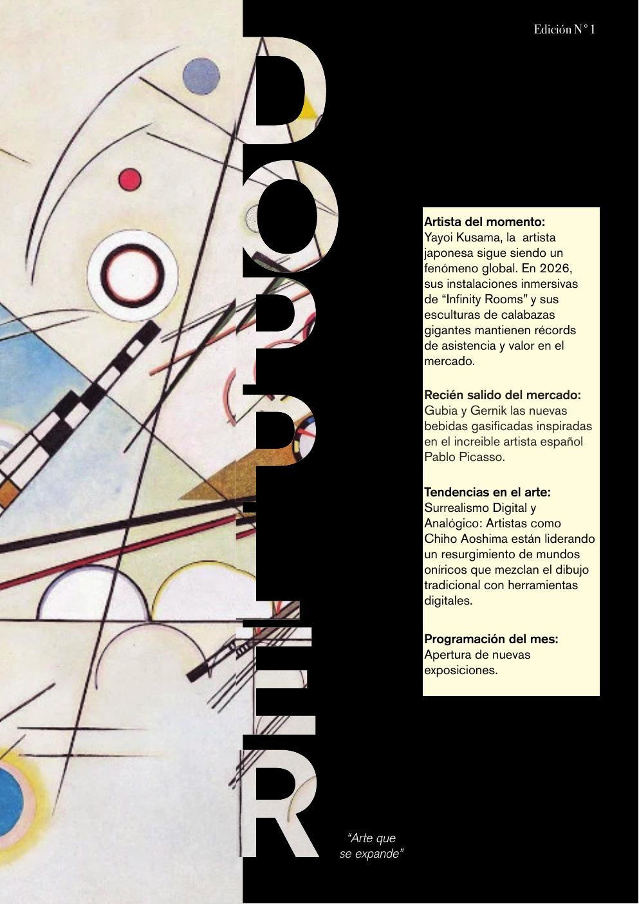

Edición N°1 · 2026
DOPPLER
"Arte que se expande"
Artista del momento, programación del año y tendencias en el arte. Un recorrido por lo que está marcando 2026.

01
Artista del momento
Yayoi Kusama, la artista japonesa sigue siendo un fenómeno global.
02
Exposiciones 2026
Apertura de nuevas exposiciones en MoMA, MET, Grand Palais y más.
03
Tendencias en el arte
Surrealismo Digital y Analógico: el resurgimiento de mundos oníricos.